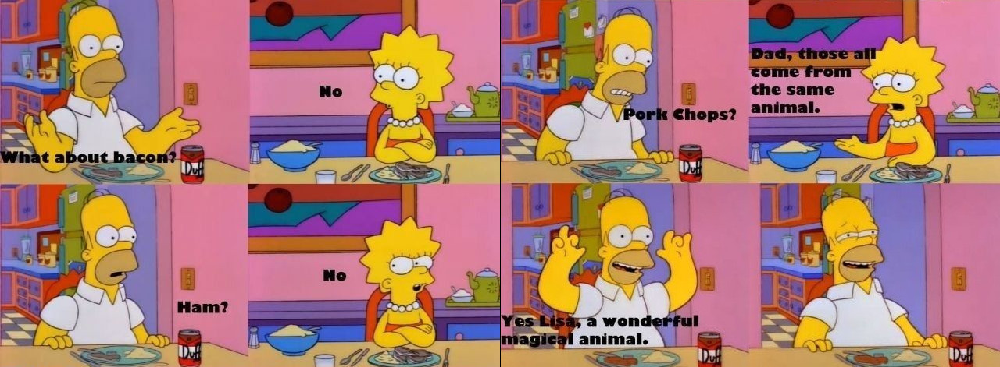
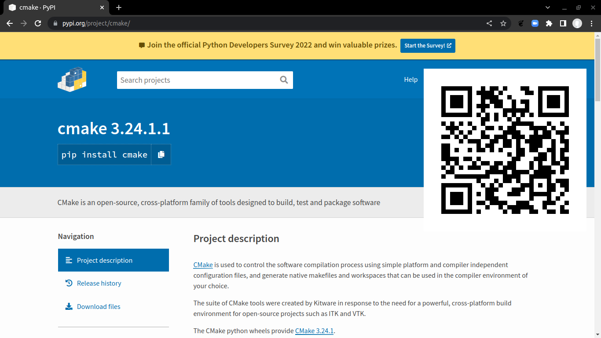
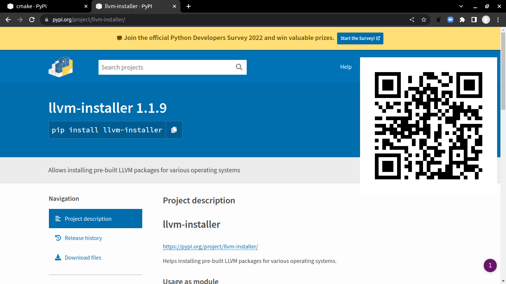
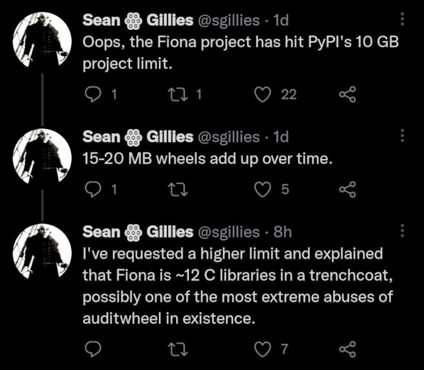
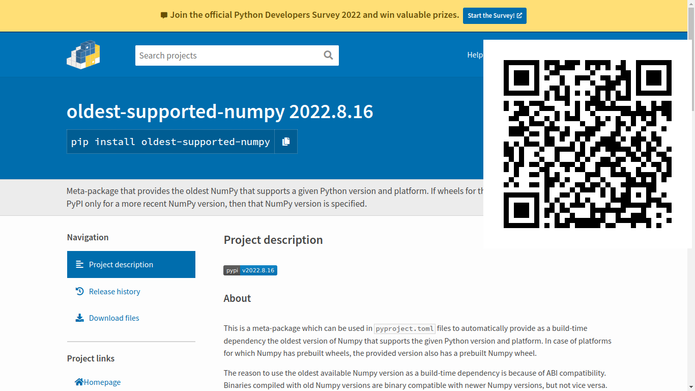
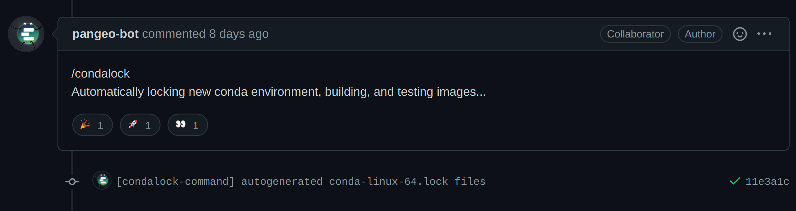

Meu produto está pronto, e agora?
Empacotando e distribuindo Software para Computação Científica
Filipe Fernandes
Oct 27, 2022
O que é cultura?
É uma rede de compartilhamento de símbolos, significados e valores de um grupo ou sociedade. São formados artificialmente pelos humanos, de uma maneira não natural ao longo de seu desenvolvimento.
Logo, por definição, precisamos saber a origem e estória de cada um para entender sua cultura.
Aviso
Bom, isso foi uma forma longa de dizer que tudo nessa apresentação terá opiniões, e não necessariamente é a solução para todos os problemas.
Minha origem e estória
- Oceanógrafo, mestre em Oc. Física, PhD dropout.
- Comecei com Fortran/Matlab, e como todo pesquisador, meu desafio número 2 era compilar/instalar Software.
- Inevitavelmente acabei me tornando o “empacotador” do lab.
Hoje sou developer advocate da National Oceanic and Atmospheric Administration (NOAA) no time do Integrated Ocean Observing System (IOOS).
Como cheguei aqui?
Em computação científica ou você morre resolvendo bugs* em código legado ou vive o suficiente para se tornar empacotador.
* que você mesmo criou.
Mas o que é um “pacote científico (Python)?”

Nenhuma solução abrange +80% dos problemas
Uma breve revisão de empacotamento em Python.
- Python egg (2004-2012): “binário”, zip do código fonte, multi-plataforma (“importable”).
- Python sdist (?-hoje): evolução do egg, ainda apenas código fonte*.
- Pacotes conda (2012-hoje): instaláveis pelo gerenciador de pacote agnóstico* conda.
- Python wheels (2012-hoje): PEP 427, distribuição binária com código compilado.
conda vs wheels parte 1
| conda | wheels | |
|---|---|---|
| solver | primeira versão | no pip ~2020 |
| shared libs | são dependências | são “bundled” * |
| gerencia | qualquer pacote até mesmo Python | apenas pacotes Python * |
cmake

llvm

Então usar pip é um desperdício de espaço?
conda create --name CONDA python=3.10 rasterio fiona pyproj geopandas shapely rtree netcdf4 h5py h5netcdfconda create --name PIP python=3.10 pip && conda activate PIP
pip install rasterio fiona pyproj geopandas shapely rtree netcdf4 h5py h5netcdfdu -skch *
938M CONDA
393M PIPEntão o “bundle” não é tão ruim assim?

Fazendo uma dieta
micromamba/envs/PIP via 🅒 CLI
❯ lr | grep libgdal
26M Oct 21 14:41 libgdal-f07e835c.so.30.0.3
29M Oct 21 14:41 libgdal-fe50f3e8.so.31.0.2micromamba/envs/PIP via 🅒 CONDA
❯ lr | grep libgdal
100K Oct 21 14:39 libgdal-3.5.2-h6e88209_4.json
libgdal.so -> libgdal.so.31.0.2
libgdal.so.31 -> libgdal.so.31.0.2
36M Oct 21 14:39 libgdal.so.31.0.2now for something completely different

conda vs wheels parte 2
| conda | wheels | |
|---|---|---|
| instala pkg? | ✓ | pip ou flit/flit-core ou
poetry/poetry-core ou hatch/hatchling ou
pdm ou pipenv ou (insira aqui sua última busca
do Google) |
conda vs wheels parte 3
| conda | wheels | |
|---|---|---|
| envs | ✓ | venv ou pyenv ou
virtualenv+virtualenvwrapper ou
pipx e/ou alguns dos acima |
| empacota? | ✓ | build ou setuptools ou pep517
e/ou packaging e/ou twine e/ou
audiwheel e/ou alguns dos acima |
conda vs wheels parte 4
| conda | wheels | |
|---|---|---|
| lockfile | plugin externo | piptools ou pipenv e/ou alguns dos
acima |
Em resumo
OK, sou apenas um usuário que quer instalar e gerenciar envs

Escolhas… Conda como gerenciador de pacotes.
- ~80% dos recursos em um único comando
- permite maior flexibilidade em “linkar” pacotes from shared libs
- permite a criação da variantes
- pacotes não são responsabilidade do desenvolvedor, mas da comunidade
- 100% OSS
- comunidade diversa e aberta
- múltiplas empresas envolvidas
Escolhas… Conda como gerenciador de ambientes
- instala Python e outras linguagens
- não precisa de acesso elevado na máquina
- ambientes são encorajados e reduz a confusão de caminhos e variáveis
- ambientes podem ser criados “from history”, arquivo yaml ou lockfiles
OK, mas como empacotar?
https://mathspp.com/blog/how-to-create-a-python-package-in-2022
5 estórias, 5 pesquisadores
Nossos pesquisadores
- Angela: meteorologista, especialista em “Convective Available Potential Energy”, Fortran.
- Marco: aprendeu Rust depois de se formar e anda com o livro “re-escreva tudo em Rust” debaixo do braço.
- Anderson: HTML/JS/npm, faz módulos para Jupyter/JupyterLab nas horas vagas.
- Paula: matemática, expert em Julia, ajuda a Angela em um projeto de compressão de dados.
- Tália: aluna de graduação, aprendendo Python, precisa ler os dados da Paula para seu TCC.
Angela
- Missão: Calcular CAPE Convective Available Potential Energy.
- Código: Pronto, em Fortran, padrão testado e publicado.
- Operação: Rodar o CAPE em resultados de modelo
numéricos que carrega pelo
xarray. - Dificuldade: Interoperabilidade entre Python-Fortran .
Solução: numpy.distutils.fcompiler +
conda
setup.py is dead, vida longa ao setup.py
from numpy.distutils.core import setup, Extension
from numpy.distutils.fcompiler import get_default_fcompiler, CompilerNotFound
compiler = get_default_fcompiler()
f90flags = []
if compiler == 'gnu95':
f90flags.append('-ffree-form')
extensions = ['stdheight_2D_model_lev', 'stdheight_2D_pressure_lev']
def _mk_sources(name):
return [f'src/xcape/fortran/{name}.pyf', f'src/xcape/fortran/{name}.f90']
ext_modules = [Extension(name='fortran.' + name, sources=_mk_sources(name),
extra_f90_compile_args=f90flags, f2py_options=['--quiet'])
for name in extensions]Empacotando tudo
oldest-supported-numpy

Marco
- Missão: Calcular o MinHash de assinaturas de DNA
- Código: Reescreveu o Fortran original em Rust.
- Operação: Distribuir um binário para centenas de geneticistas alérgicos a computador.
- Dificuldade: Compilar e distribuir um código Rust+Python.
Solução: cffi+milksnake + conda
cffi+milksnake para o salvamento
from setuptools import setup, find_packages
def build_native(spec):
build = spec.add_external_build(
cmd=['cargo', 'build', '--release'],
path='./rust'
)
spec.add_cffi_module(
module_path='example._native',
dylib=lambda: build.find_dylib(
'example', in_path='target/release'),
header_filename='include/example.h',
rtld_flags=['NOW', 'NODELETE']
)Setup
Empacotando tudo
Anderson
- Missão: Ajudar o pessoal do lab com a extensão “favorite folders” para o JupyterLab.
- Código: Uma extensão para o JupyterLab super útil
mas requer comandos extras (npm) para instalar após o
pip install. - Operação: Facilitar a instalação dessa extensão.
- Dificuldade: A extensão depende de outro gerenciador de pacotes, o npm, para finalizar a instalação.
para o conda o npm é só outro pacote
Recapitulando
Usamos o conda para,
- compilador Fortran
(
numpy.distutils.fcompiler) - compilador Rust
(
cffi+milksnake) - outro gerenciador de pacotes
(
npm)
e criamos pacotes binários instaláveis pelo conda. Tudo isso é
possível no formato wheels com cibuildwheels ou
multibuild.
Mas esquecemos da Paula e da Tália!
Paula
- Missão: Comprimir terabytes de resultados de modelos atmosféricos.
- Código: Paper e código fonte publicados na Nature
computational Science em…
Julia! - Operação: Aplicar essa compressão de dados em seus
modelos pela
xarray. - Dificuldade: Depender de outra linguagem no runtime!
Julia é só outro pacote para o conda
Do outro lado do (Python)
from .julia_helpers import install
already_ran = False
if not already_ran:
already_ran = install(quiet=True)
jl = Julia(compiled_modules=False, debug=False)
from julia import Main
path_to_julia_functions = os.path.join(
os.path.dirname(__file__), "bitinformation_wrapper.jl"
)
Main.path = path_to_julia_functions
jl.using("BitInformation")Tália
- Missão: Ler os terabytes de resultados de modelos atmosféricos da Paula.
- Código: Aprendendo Python mas precisa do
nco, ferramenta não-python oficial do IPCC - Operação: Usar o
ncode dentro do Python para não sair da zona de conforto,pynco. - Dificuldade: Instalar um pacote CLI C/C++ que será
chamado pelo
pynco.
nco é só outro pacote para o conda
To the moon Web
and back
Boas práticas: Core comum
Boas práticas: gerenciado apps com conda-lock

Perguntas?
(How To Make Package Managers Cry)